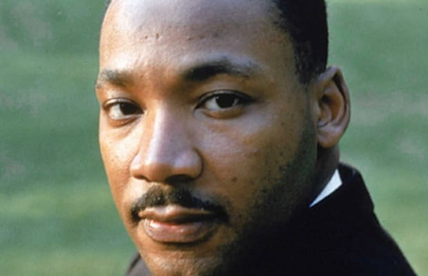

Martin Luther King Jr
A tribute to one of the greatest civil rights advocates

Martin pictured here looking fresh
Here are some of Dr King's many accomplishments
- He led the Montgomery Bus boycott in 1955
- He led the Birmingham campaign
- He was the first president of the Southern Christian Leadership Conference
- He organized the great march on Washington in 1963
- He gave many speeches that inspired and motivated the civil rights movement
- He was Time Magazine's Man of the Year in 1963
- He bacame the youngest recipient of the Nobel Peace Prize in 1964
- He became reknowned world wide as the symbolic leader for African Americans